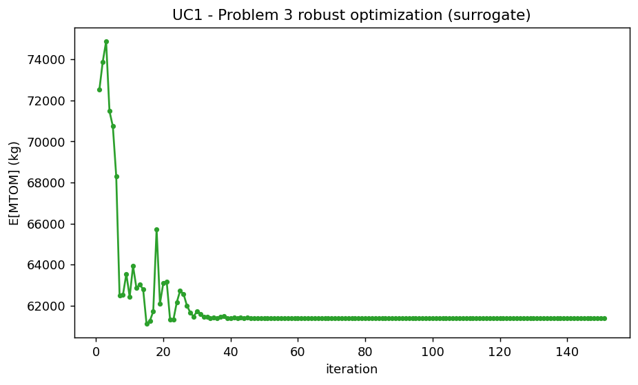
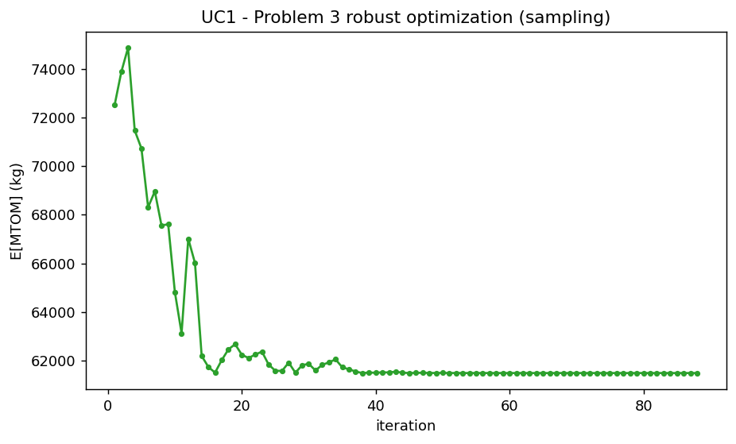
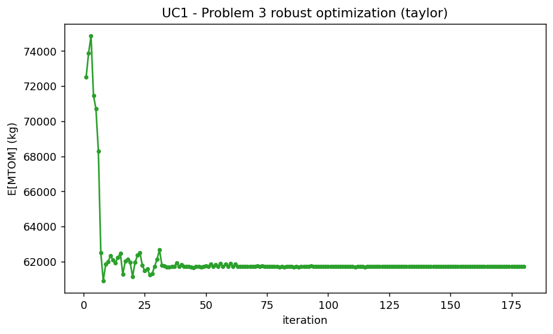
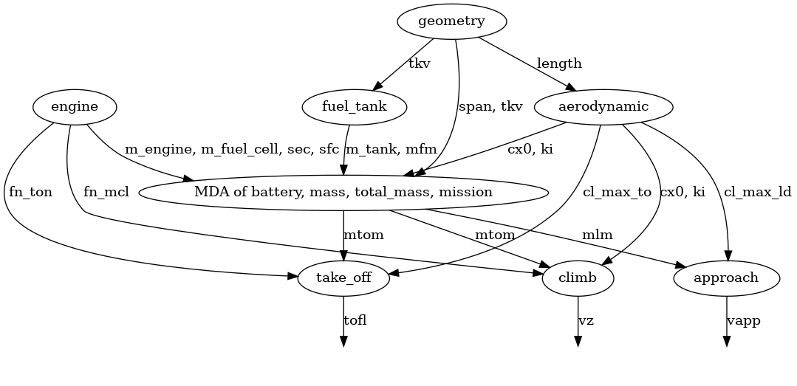
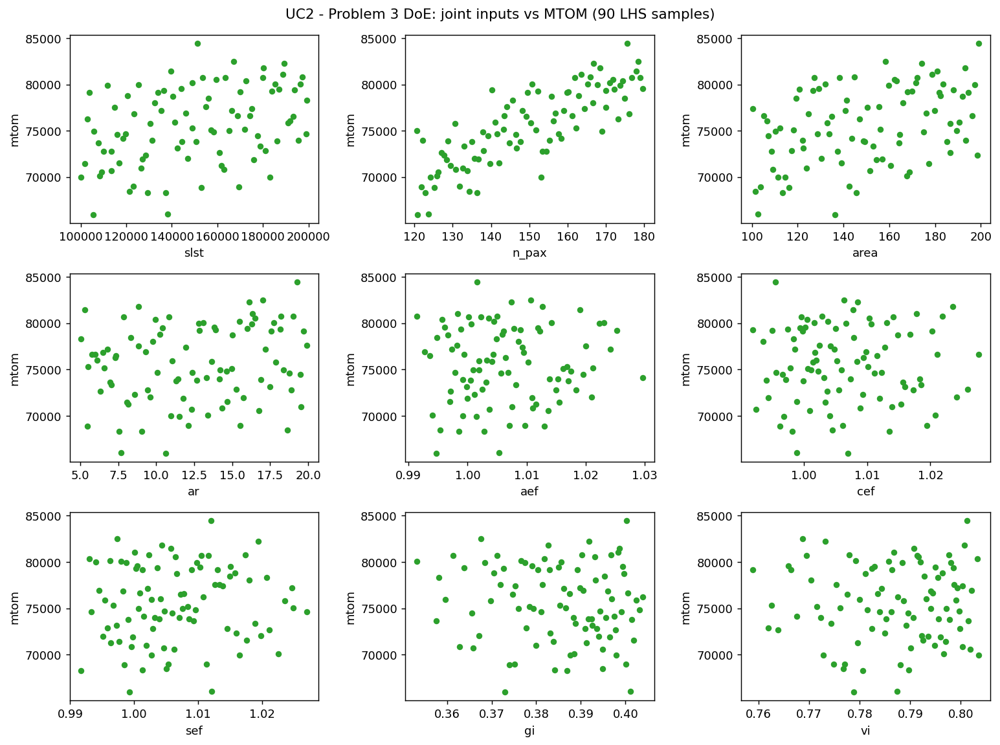
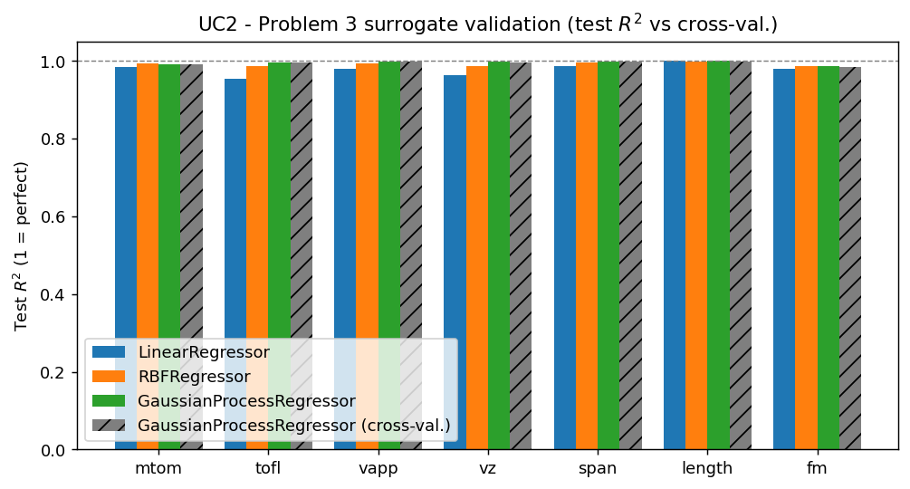
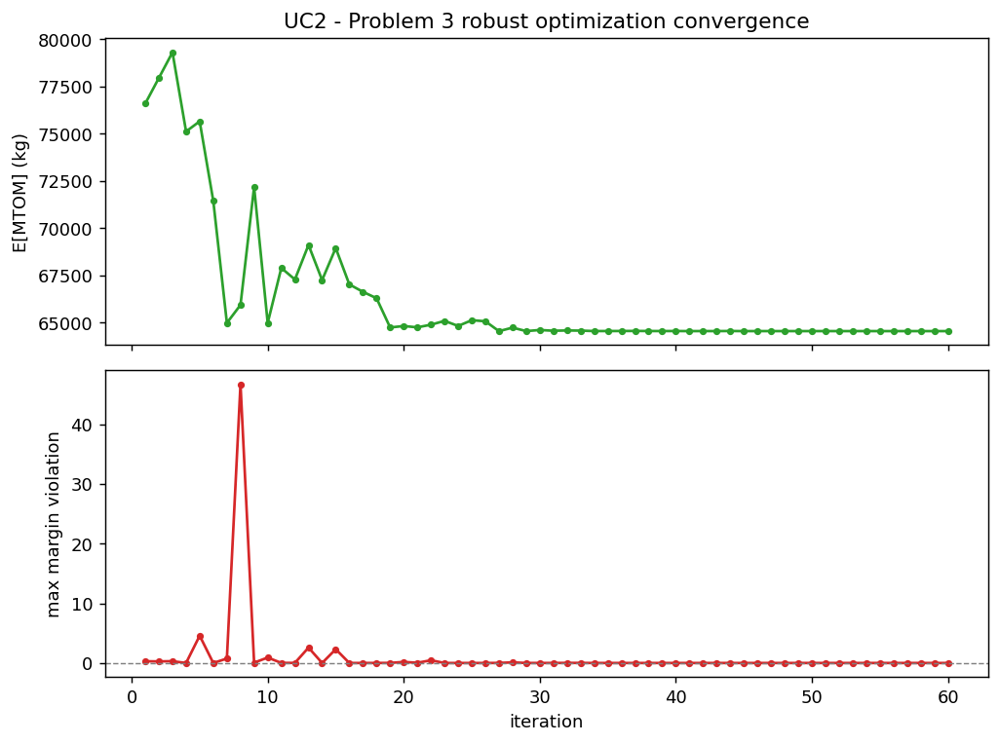
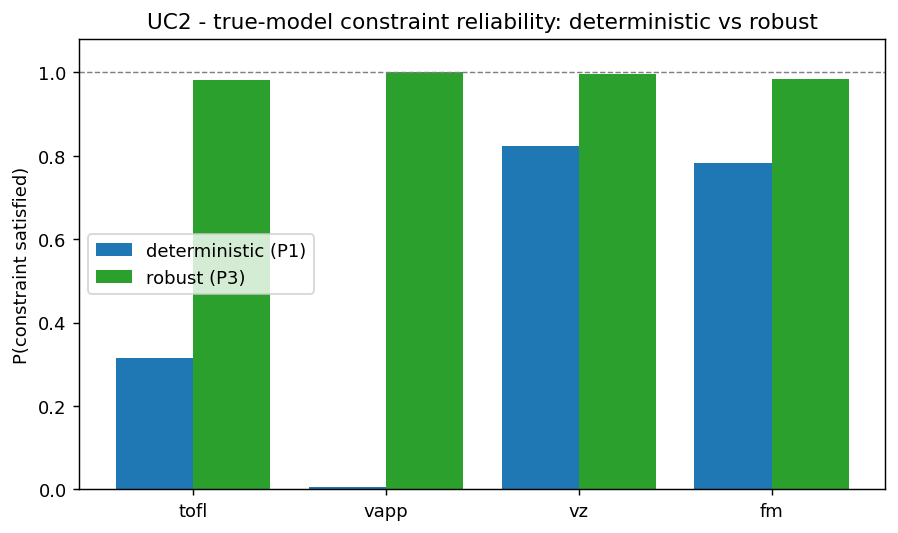
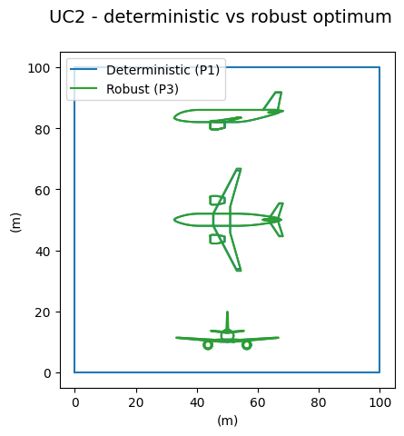

Partie 3 — Modèle surrogate et optimisation robuste¶
Objectif et méthode¶
Le Problème 3 construit un surrogate \(\hat{f}(x, u) = f(x, u)\) sur à la fois les
paramètres de conception et les paramètres incertains, puis mène une optimisation
robuste : minimiser la masse maximale au décollage espérée E[mtom] tout en
imposant chaque contrainte avec une marge de sécurité \(\text{moyenne} \pm k\sigma\)
(ici \(k = 2\)) :
C'est un proxy de robustesse fondé sur les moments, pas une garantie probabiliste : avec des sorties non gaussiennes (lois triangulaires, non linéarités), la bande \(k = 2\) ne certifie pas une fiabilité de 97,7 % ; les fiabilités réelles sont mesurées par Monte-Carlo plutôt que supposées.
L'espérance \(\mathbb{E}\) et l'écart-type \(\mathbb{S}\) doivent être estimés à chaque itération de l'optimiseur, ce qui exige de propager les incertitudes à travers le modèle. Trois approches sont possibles :
surrogate: on échantillonne un krigeage de \(\hat{f}(x, u)\), peu coûteux par itération ;sampling: Monte-Carlo direct sur le modèle multidisciplinaire, \(N\) réalisations i.i.d. de \(u\), MDA résolue pour chacune ;taylor: développement de Taylor au premier ordre autour de la moyenne, sans tirage aléatoire.
Les deux cas d'usage sont traités : pour le kérosène (UC1), on compare ces trois
méthodes d'estimation ; pour l'hydrogène liquide (UC2), on déroule le pipeline
complet (plan d'expériences conjoint, krigeage, optimisation robuste, puis
vérification sur le vrai modèle). L'algorithme retenu est NLOPT_COBYLA
(cohérent avec la Partie 1).
Cas d'usage 1 — Kérosène / Turbofan : comparaison des méthodes d'estimation¶
Pour cette comparaison, on conserve la formulation étendue à 7 variables
incertaines (gi, vi, aef, cef, sef, fc_pwd, bed) et les disciplines
incluant operating_cost. L'objectif est ici méthodologique : comparer le
comportement des trois estimateurs de statistiques, non de produire un optimum
directement comparable au pipeline canonique UC2.
a. Approche par surrogate¶
Cette méthode s'appuie sur un krigeage de \(\hat{f}(x, u)\), ré-échantillonné à chaque itération :

b. Approche par échantillonnage (Monte-Carlo)¶
L'échantillonnage direct applique Monte-Carlo sur le modèle multidisciplinaire : à chaque itération \(k\) de l'optimiseur, on génère \(N\) réalisations i.i.d. de \(u\) et la MDA est entièrement résolue pour chacune :

c. Approche par polynôme de Taylor¶
Plutôt que des tirages, on s'appuie sur un développement de Taylor au premier ordre autour de la moyenne \(\mu = \mathbb{E}[U]\) :
Comme \(\mathbb{E}[U - \mu] = 0\), on a \(\mathbb{E}[f(x, U)] \approx f(x, \mu)\) et \(\mathbb{V}[f(x, U)] \approx \sigma^2 \big(f'(x, \mu)\big)^2\) ; l'écart-type \(\mathbb{S}\) découle de la racine de la variance.

Résultats et comparaison¶
| Méthode | E[MTOM] (kg) | slst |
n_pax |
area |
ar |
|---|---|---|---|---|---|
surrogate |
61 395 | 100 kN | 120 | 112,5 | 14,22 |
sampling (MC) |
61 489 | 100 kN | 120 | 114,9 | 13,93 |
taylor |
61 713 | 106,2 kN | 120 | 112,4 | 14,24 |
Les trois méthodes convergent vers des conceptions proches (E[MTOM] à \(\approx\) 0,5 % près), ce qui valide la cohérence des estimateurs. Leurs comportements diffèrent néanmoins :
- l'approche MC converge en le moins d'itérations (\(\approx\) 88) avec une trajectoire lisse, car les 200 tirages lui donnent une bonne « vision » de la dispersion à chaque pas ; son optimum est à peine plus lourd que celui du surrogate ;
- l'approche Taylor est la plus lente (\(\approx\) 180 itérations) et traverse davantage
de phases infaisables ; elle choisit une poussée plus élevée (
slst\(\approx\) 106,2 kN) et aboutit à un avion légèrement plus lourd, conséquence de l'approximation au premier ordre de la variance ; - l'approche surrogate est la moins coûteuse par itération et donne l'optimum le plus léger, très proche du MC, ce qui en fait le meilleur compromis coût/précision.
(La variante sampling résout la MDA du vrai modèle à chaque tirage : c'est de loin
la plus coûteuse des trois, d'où son intérêt limité face au surrogate à précision
comparable.)
Cas d'usage 2 — Hydrogène liquide / Turbofan : pipeline robuste complet¶
Plan d'expériences conjoint et validation du surrogate¶
Le modèle OAD est un véritable système multidisciplinaire : les disciplines sont
liées par une boucle de rétroaction sur la masse au décollage, résolue par une
analyse multidisciplinaire (MDA) à chaque échantillon du plan d'expériences.
Le graphe de couplage condensé le rend explicite : mass, total_mass et
mission (plus le silencieux battery) forment le cœur fortement couplé,
alimenté par geometry, aerodynamic et engine, et alimentant à leur tour les
contraintes de décollage, d'approche et de montée.



Dans l'espace conjoint à 9 dimensions, on conserve le modèle de krigeage
(processus gaussien). Les modèles linéaire, RBF et krigeage atteignent tous un R\(^{2}\)
global élevé pour le MTOM (\(\approx\) 0,98-0,99), mais l'optimum se situe dans un coin de
l'espace conjoint (slst et n_pax sur leurs bornes inférieures) où un plan
space-filling est clairsemé et où le RBF revient vers la moyenne d'entraînement,
sur-estimant alors le MTOM d'environ 2 %. Le processus gaussien est bien mieux
calibré sur les contraintes dans cette région (R\(^{2}\) de test pour vapp, vz,
tofl, span tous \(\geq\) 0,997 contre \(\approx\) 0,96-0,99 pour le RBF), ce qui permet à
l'optimiseur de localiser la bonne conception. Une validation croisée K-fold
confirme l'absence de sur-apprentissage (R\(^{2}\) CV = 0,991 pour le MTOM, \(\geq\) 0,98 pour
chaque sortie) ; les barres hachurées grises montrent qu'elle suit le R\(^{2}\) de test
du découpage unique. Le plan d'expériences et toutes les étapes de Monte-Carlo
sont tirés avec une graine fixe, donc les figures sont reproductibles.
Malgré cela, un surrogate n'est qu'une approximation : à l'optimum, le processus gaussien sur-estime encore le MTOM d'environ 0,5 % (\(\approx\) 300 kg). On vérifie donc l'optimum sur le vrai modèle, et ce sont ces valeurs qui sont rapportées ci-dessous.
Optimisation robuste¶

Ici la robustesse est essentielle. L'optimum robuste
(slst = 100 kN, n_pax = 120, area = 117,9 m\(^{2}\), ar = 9,53) a un MTOM nominal
réel de \(\approx\) 63 650 kg (~63,6 t). En propageant les mêmes incertitudes à travers
le vrai modèle à chaque conception, son MTOM espéré est de 64 329 kg contre
63 968 kg pour la conception déterministe (l'optimum de la Partie 1,
area = 110,9 m\(^{2}\), ar = 9,38), soit un prix de la robustesse de +361 kg
(+0,6 %). (slst et n_pax sont sur leurs bornes inférieures pour les deux
conceptions : l'optimiseur veut une poussée minimale et le moins de passagers
possible pour réduire la masse, donc ces deux variables sont fixées par le plancher
de l'espace de conception, pas par les contraintes.)

Cette figure est calculée sur le vrai modèle. La conception déterministe
(optimale au nominal) est probabilistiquement fragile : sous les incertitudes
technologiques, elle ne satisfait la contrainte de vitesse d'approche vapp
que 0,6 % du temps, la distance de décollage tofl 31,6 %, la marge
de carburant fm 78,2 % et le taux de montée vz 82,4 %. C'est
cohérent avec la Partie 1, où cet optimum nominal était déjà juste à la limite de
vapp (\(\approx\) 69,7 contre 69,45 m/s) et de tofl : il est optimal au point nominal
mais posé sur ces frontières, si bien que tout tirage défavorable de
gi/vi/sef les viole. La conception robuste relève toutes les contraintes à
\(\geq\) 98 % (vapp 100 %, vz 99,7 %, fm 98,5 %, tofl 98,2 %) en
agrandissant l'aile et en augmentant son allongement (area 117,9 vs 110,9 m\(^{2}\),
ar 9,53 vs 9,38), ce qui améliore la finesse (rapport portance/traînée), réduit
le carburant de mission, restaure la marge et abaisse la vitesse d'approche, pour
le coût en masse très modeste indiqué ci-dessus. La conception hydrogène robuste
est donc nettement préférable à la déterministe.

Synthèse de la Partie 3¶
- Les trois méthodes d'estimation des statistiques (surrogate, MC, Taylor) convergent vers des optima cohérents : à \(\approx\) 0,5 % près sur E[MTOM] pour le kérosène (UC1), et le même accord se retrouve pour l'hydrogène (UC2 : 62 076 / 62 164 / 62 329 kg, soit \(\approx\) 0,4 % d'écart) ; l'approche surrogate offre le meilleur compromis coût/précision, le MC la trajectoire la plus lisse, et Taylor reste le plus lent et le plus conservateur.
- Pour l'hydrogène liquide, l'optimisation robuste est décisive : la conception
déterministe de la Partie 1, optimale au nominal mais saturant
vappettofl, ne respecte ces contraintes que 0,6 % et 31,6 % du temps sous incertitudes. La conception robuste rétablit toutes les fiabilités à \(\geq\) 98 %. - Ce gain de fiabilité s'obtient pour un surcoût de masse minime (+361 kg, +0,6 % sur E[MTOM]), en agrandissant légèrement la voilure : la robustesse est ici quasi gratuite au regard du risque qu'elle élimine.
- Enfin, le surrogate ne sert qu'à chercher : tous les chiffres rapportés (MTOM, fiabilités) sont lus sur le vrai modèle, le krigeage sur-estimant systématiquement le MTOM de \(\approx\) 0,5 % dans le coin où se trouve l'optimum.